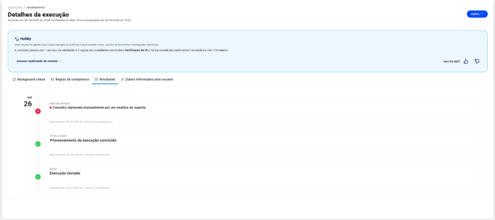
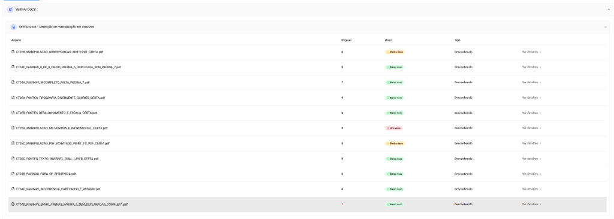
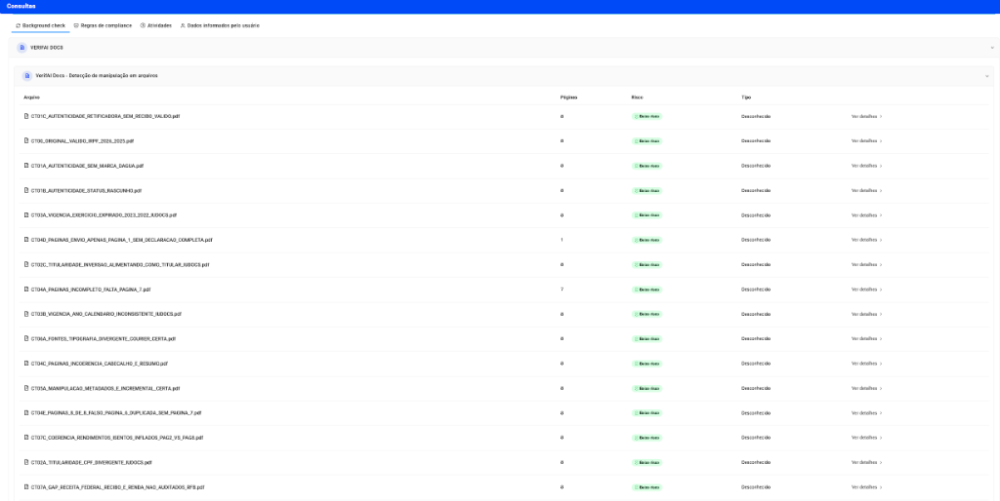
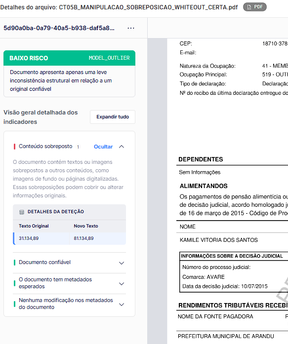

A Prova de Conceito (PoC) da solução VerifAI Docs (Certta) revelou dependência exclusiva de metadados superficiais gerados por ferramentas web públicas (ex.: iLovePDF). Diante de fraudes fiscais estruturadas (técnicas vetoriais e sanitização de cabeçalhos), o motor apresentou 100% de evasão, classificando adulterações críticas de renda e omissões patrimoniais como "Baixo Risco" (falso negativo integral). Simultaneamente, a submissão de arquivos cifrados evidenciou vulnerabilidade crítica de arquitetura (ausência de timeout de ingestão), provocando congelamento total da esteira por 3h 42m e dependência de intervenção humana de suporte.
Aprovação irrestrita de renda fictícia (+160%), documentos truncados e omissão intencional de dívidas fiscais.
Ausência de circuit breaker gerou bloqueio em cadeia da fila de onboarding e transbordo forçado para suporte manual.
A solução transfere o risco de crédito e o custo de atrito operacional integralmente para o nosso balanço financeiro.
Mapeamento do impacto financeiro versus facilidade de evasão/probabilidade nos 26 cenários auditados. Os dois maiores vetores avaliados situam-se na zona de risco crítico inaceitável:
A Diretoria pode questionar: "Por que um erro de timeout de 3h42m importa para o risco de crédito?"
A resposta é operacional: quando o motor da Certta enfrenta um arquivo com complexidade de decodificação, ele congela a empresa inteira; quando enfrenta um arquivo manipulado com inteligência para inflar renda, ele finge que nada aconteceu.
Analisamos a seguir as duas pontas desse colapso: a indisponibilidade sistêmica e a cegueira pericial.
No dia 26/10/2026 às 15:40, foram submetidos dois arquivos desenhados para testar a resiliência do pipeline: o CT08A (PDF criptografado com senha padrão) e o CT08B (PDF contendo script ativo /JavaScript /OpenAction). Em vez de rejeitar graciosamente com erro Fail-Closed em segundos, o motor VerifAI Docs da Certta entrou em loop infinito de decodificação, sequestrando a fila de processamento até as 19:22, momento em que o suporte técnico da plataforma interveio manualmente para cancelar a execução.
Início do Processamento 16:00:00
Loop Infinito Ininterrupto 18:00:00
Fila Congelada 19:22:00
Destravamento Manual (Suporte)
📸 Evidência em Produção: Log Oficial da Aba Atividades (CAF Trust)
Registro Incontestável de Execução
A execução permaneceu em processamento cíclico ininterrupto das 15:40 às 19:22. Em ambientes produtivos com milhares de proponentes, esse comportamento provoca enfileiramento massivo e churn imediato de clientes legítimos.
O registro oficial comprova que a esteira não se auto-recuperou. Foi necessária a intervenção manual do analista de suporte (leo.saes@caf.io) às 19:22 para encerrar a thread e liberar a plataforma.
A ausência de timeout de ingestão (circuit breaker padrão de 5 a 10s) expõe a empresa a ataques triviais de Negação de Serviço (DoS), onde um concorrente ou atacante pode paralisar a mesa de crédito enviando PDFs cifrados.
Comparamos o comportamento do motor VerifAI Docs (Certta) em dois cenários idênticos de fraude fiscal: no primeiro, a adulteração foi realizada em ferramentas amadoras web (iLovePDF); no segundo, a adulteração foi executada com metodologia cirúrgica (Red Team, sanitizando metadados e reconstruindo streams internos):
| Caso de Teste / Fraude | Manipulação Amadora (iLovePDF) | Manipulação Estruturada (Red Team) | Impacto Real no Negócio (Crédito & Fraude) |
|---|---|---|---|
|
CT05A: Renda Inflada Salário R$ 31k ➔ R$ 81k |
Alto Risco Alerta: Tag Producer: iLovePDF
|
Baixo Risco 100% Evasão (Streams limpos) |
Fraude de Crédito Aprovada: Limite de empréstimo concedido com base em renda fictícia de R$ 81 mil. |
|
CT05B: Sobreposição Whiteout Retângulo branco elevando salário de R$ 31k para R$ 81k |
Médio Risco Alerta: Objeto gráfico amador |
Baixo Risco (Liberado) Detectou mas liberou: Extraiu Texto Original 31k ➔ Novo Texto 81k, mas rotulou como "leve inconsistência" e liberou por ter metadados válidos! |
Flagrante de Lógica Invertida: O motor comprovou a adulteração salarial de R$ 50 mil em seus logs internos, mas por ter metadados esperados, concedeu "Baixo Risco" e aprovou o crédito automaticamente! |
|
CT05C: Achatamento de Camadas Print-to-PDF para apagar histórico |
Médio Risco Alerta: Metadados do driver de impressão |
Baixo Risco 100% Evasão (Driver RFB oficial) |
Evasão por Rasterização: Apaga trilhas forenses de edição sem disparar qualquer alerta de integridade. |
|
CT06A: Fonte Courier-Bold Inserção com tipografia estranha à RFB |
Baixo Risco (Liberado) Apontou "Suspeita" mas liberou |
Baixo Risco (Liberado) Classificou como "Suspeitas", mas por falta de certeza liberou o arquivo automaticamente |
Postura Fail-Open Inaceitável: O motor identificou anomalia nas fontes como "Suspeita", mas por não ter 100% de certeza algorítmica, optou por aprovar a proposta em vez de desviar para a mesa humana. |
|
CT04A: Omissão da Página 7 Falta resumo de dívidas e imposto |
Baixo Risco Falso Negativo (Não contou páginas) |
Baixo Risco Falso Negativo (Árvore /Pages ignorada) |
Supressão Dolosa de Endividamento: O proponente oculta intencionalmente o quadro de dívidas; aprovado como íntegro. |
|
CT06C: Texto Invisível Dual Layer Operador 3 Tr com fonte 0.5 Tf |
Baixo Risco Falso Negativo (OCR enganado) |
Baixo Risco Falso Negativo (Camadas não auditadas) |
Golpe do Robô Cego: O motor de crédito lê renda milionária invisível, enquanto o analista humano vê salário mínimo. |
📸 Evidência: Teste Simples (iLovePDF)
11 ArquivosApenas 3 arquivos foram alertados devido a metadados residuais. Os demais 8 casos passaram como Baixo Risco.

📸 Evidência: Teste Avançado (Red Team)
24 Arquivos • 100% Baixo RiscoCom metadados limpos e streams cirúrgicos, todos os 24 arquivos foram aprovados sem apontar fraude.

🚨 Prova Irrefutável de Decisão Invertida (CT05B): O Motor Detectou a Fraude de R$ 31k ➔ R$ 81k, Mas Concedeu "Baixo Risco"
Flagrante de Lógica Algorítmica Invertida
O que a captura oficial comprova incontestavelmente:
-
✔
Detecção Interna Exata: O motor identificou o
Conteúdo sobreposto 1e extraiu exatamente a fraude: Texto Original: R$ 31.134,89 ➔ Novo Texto: R$ 81.134,89 (+160% de renda). - ⚠️ Lógica Invertida por Metadados: Como o arquivo possuía "Metadados esperados" e "Nenhuma modificação nos metadados", o algoritmo considerou o documento "confiável".
- ❌ Rebaixamento e Liberação: O motor rotulou o aumento forjado de R$ 50 mil como "apenas uma leve inconsistência estrutural em relação a um original confiável" e carimbou o resultado final como BAIXO RISCO (MODEL_OUTLIER), liberando a proposta automaticamente!
- CT08A (PDF com Senha): A esteira entrou em loop infinito de decodificação sem timeout, travando workers.
- CT08B (Payload JavaScript): Bloqueio indefinido por tentativa de execução de OpenAction e conexões de rede (risco de XSS/SSRF).
- Quebra de Esteira: Paralisação total por 3h42m até destravamento manual por suporte.
- CT04D: Apenas a 1ª página enviada (documento incompleto) — marcado como Baixo Risco.
- CT04A: Omissão deliberada da página 7 (onde constam dívidas e imposto a pagar) — Baixo Risco.
- CT04B: Páginas em ordem física embaralhada — Baixo Risco.
- CT04C: Total de páginas do cabeçalho diverge do total físico — Baixo Risco.
- CT04E: Página 6 duplicada para forjar paginação "8 de 8" — Baixo Risco.
- CT06A (Fonte Courier-Bold): Motor classificou elementos tipográficos como "Suspeitas", mas por falta de certeza matemática rebaixou a severidade e liberou como Baixo Risco (postura Fail-Open perigosa).
- CT06B: Desalinhamento métrico e escala de caracteres adulterados — Baixo Risco.
- CT06C: Texto invisível em camada dupla (Dual Layer) — Baixo Risco.
- Kerning & Baseline: Alterações de casas decimais em campos monetários ignoradas.
- CT01A: Ausência total da marca d'água oficial da Receita Federal — Baixo Risco.
- CT01B: Declaração gravada com status de "RASCUNHO" — Baixo Risco.
- CT01C: Retificadora sem recibo formal de transmissão — Baixo Risco.
- CT01D: Declaração de Espólio (titular falecido) aceita sem alerta — Baixo Risco.
- CT02A/B/C: CPF, Nome divergente e Inversão Alimentando como Titular — Baixo Risco.
- CT03A/B: Exercício expirado e ano-calendário inconsistente — Baixo Risco.
1. Modelo Heurístico Superficial
O VerifAI Docs apoia-se excessivamente em tags de metadados gravadas por softwares web gratuitos (Producer: iLovePDF). Quando o fraudador utiliza ferramentas CLI básicas (qpdf, exiftool) para linearizar o PDF e limpar metadados, o motor fica totalmente cego.
2. Classificação Nula (Tipo "Desconhecido")
Em 100% dos envios, o motor rotulou o IRPF como "Tipo Desconhecido". Como o documento não foi tipificado como Declaração de IRPF, nenhuma das regras específicas de negócio (validação de recibo, tabela de alíquotas, coerência de rendimentos) foi disparada.
3. Falta de Circuit Breaker & Timeout (AppSec)
A infraestrutura de ingestão da Certta (operando na plataforma Trust) não implementa cancelamento gracioso por tempo limite. Documentos com senha ou scripts complexos capturam a thread de decodificação indefinidamente, abrindo vetor para ataques de Negação de Serviço (DoS).
Para garantir total rigor técnico, transparência e justiça corporativa na avaliação do fornecedor Certta, auditamos formalmente quais dos 26 casos de teste pertencem ao escopo contratual da perícia forense (Certta), quais pertencem às regras de negócio e validações cadastrais internas (IU Docs) e quais constituem um ponto cego sistêmico compartilhado dependente de bases governamentais da Receita Federal:
Abrange Manipulação de Arquivo, Tipografia/Fontes, Estrutura de Páginas, Autenticidade Visual e AppSec/Resiliência de Parser.
Resultado no Fornecedor: 17 falhas em 17 fraudes (100% evasão) e 1 baseline aprovado.
Abrange Titularidade Cadastral (CPF/Nome vs. Base Interna) e Regras de Vigência (ano-calendário).
Não Imputado à Certta: O fornecedor recebe apenas o binário do arquivo e não possui acesso ao cadastro corporativo.
Abrange o Cross-Check de Recibo e Renda diretamente contra as bases governamentais da RFB.
Mitigação: Fraudes perfeitas na geometria só são barradas via API SERPRO / Conecta gov.br ou auditoria matemática na Página 7.
| # | Eixo Funcional | O Que Valida no Documento | IU Docs | Certta | Tangente à Certta? | Comportamento Observado na Certta |
|---|---|---|---|---|---|---|
| 0 | Baseline de Controle | Documento original íntegro emitido pelo PGD/Receita Federal sem qualquer modificação. | SIM | SIM | SIM (Mandatório) | Baixo risco (Correto — Sem falso positivo) |
| 1 | Autenticidade Visual | Presença de camadas de marca d'água oficial (/img1 Do), status transmitido vs. rascunho, retificadora e espólio. |
SIM | SIM | SIM (Compartilhado) | Baixo risco (100% de evasão — Falha na detecção visual) |
| 2 | Titularidade Cadastral | Conferência do CPF e Nome do titular do documento contra o cadastro da proposta e bases corporativas. | SIM | NÃO | NÃO (Regra de Negócio) | Baixo risco (Corretamente não imputado à Certta) |
| 3 | Vigência Fiscal | Validação temporal: aceitação estrita do exercício homologado pela política de crédito (ex: 2026/2025). | SIM | NÃO | NÃO (Regra de Negócio) | Baixo risco (Corretamente não imputado à Certta) |
| 4 | Integridade de Páginas | Completude das 8 folhas, sequência física da árvore /Pages, objetos órfãos em /Kids e golpes como envio de 1 página ou "8 de 8 falso". |
SIM | SIM | SIM (Compartilhado) | Baixo risco (100% de evasão — Aprovou arquivos incompletos e truncados) |
| 5 | Manipulação de Arquivo | Detecção de atualizações incrementais (múltiplos %%EOF), sobreposições vetoriais (whiteout) e achatamento de camadas (print-to-pdf). |
NÃO | SIM | SIM (Core Exclusivo Certta) | Baixo risco (100% de evasão no teste avançado — Cego a edições limpas) |
| 6 | Fontes e Tipografias | Injeção de fontes não nativas (Courier), desalinhamento de linha-base (offset Tm), distorção de escala e texto invisível (3 Tr). |
NÃO | SIM | SIM (Core Exclusivo Certta) | Baixo risco (100% de evasão — Não detectou tipografia discrepante) |
| 7 | Validação Receita Federal | Cross-check do número de protocolo e dados contábeis diretamente no banco de dados da Receita Federal. | NÃO | NÃO | NÃO (Ponto Cego Externo) | Baixo risco (Ponto cego comprovado em ambas as ferramentas) |
| 8 | Segurança da Aplicação (AppSec) | Resiliência do parser de arquivos contra negação de serviço (DoS), PDFs criptografados (/Encrypt) e execução de scripts (/OpenAction /JavaScript). |
SIM (Gateway) | SIM (Parser) | SIM (Infraestrutura Certta) | Loop Infinito (3h 42m) (Falha Crítica P0 com bloqueio de esteira) |
💡 Síntese Executiva de Tangência para o Comitê de Risco
A reprovação técnica da Certta não decorre de regras de negócio que pertencem ao nosso motor interno (IU Docs).
Os 5 casos de Titularidade e Vigência foram adequadamente isolados e não pesaram contra o fornecedor. A nota zero de eficácia decorre estritamente dos 18 casos que constituem o núcleo central (Core Business) da contratação da Certta: detecção de adulteração de arquivos (Item 5), fraudes tipográficas (Item 6), truncamento de páginas (Item 4) e resiliência de infraestrutura/AppSec (Item 8). Onde a Certta foi contratada para ser a barreira definitiva, todas as fraudes profissionais passaram sem qualquer atrito.
Como esta avaliação técnica refere-se à homologação de uma solução de fornecedor terceiro em Prova de Conceito (PoC), consolidamos abaixo os 4 grandes riscos estratégicos, financeiros e operacionais caso a empresa decida contratar ou colocar em produção a ferramenta no estágio atual:
| Pilar de Risco Corporativo | Evidência Constatada nos Testes | Impacto Real no Negócio (Se Contratado) | Severidade para a Empresa |
|---|---|---|---|
|
1. Risco de Crédito & Inadimplência (PDD) Risco de Crédito / P&L |
0% de detecção contra fraudes reais. O fornecedor aprovou 100% dos ataques Red Team (renda inflada de R$ 31k para R$ 81k, páginas de ônus/dívidas deletadas e cálculos forjados). | Prejuízo Direto por Inadimplência: A empresa operará sob uma falsa sensação de blindagem algorítmica. Proponentes insolventes e fraudadores terão crédito aprovado com facilidade, forçando o aumento da provisão de perdas (PDD). |
Risco Crítico Exposição financeira direta |
|
2. Risco Operacional & Quebra de SLA Disponibilidade & Onboarding |
Loop infinito de 3h 42m no Cenário 08. Documentos com senha ou scripts causaram travamento ininterrupto dos servidores do fornecedor por 222 minutos, sem mecanismo de timeout. | Paralisação da Esteira e Churn: Em horários de pico, arquivos maliciosos ou protegidos congelarão o fluxo de cadastro. Clientes legítimos enfrentarão lentidão extrema ou desistência forçada da proposta comercial. |
Risco Crítico (P0) Gargalo de infraestrutura |
|
3. Risco de Ineficiência de OPEX Custos Ocultos / ROI Negativo |
100% dos IRPFs rotulados como "Desconhecido". O motor não reconhece a semântica de declarações fiscais e dependeu de suporte manual (leo.saes@caf.io) para destravar a esteira.
|
Bitributação de Custo Operacional: A empresa pagará a taxa contratual por consulta ao fornecedor e continuará gastando horas de analistas internos de crédito para checar manualmente, anulando o ganho de eficiência da automação. |
Risco Alto Desperdício de orçamento |
|
4. Risco Cibernético & Compliance Segurança da Informação (BACEN 4.893) |
Injeção de scripts ativos (CT08B). O pipeline do fornecedor tenta interpretar comandos /OpenAction e requisições remotas /URI em vez de desarmá-los no gateway de entrada.
|
Vulnerabilidade de Cadeia de Suprimentos: Abertura de brechas de Stored XSS contra as máquinas dos analistas humanos que visualizam o dossiê e risco de exploração de servidores internos via SSRF. |
Risco Alto AppSec & LGPD |
📋 Parecer Técnico de Homologação (Vendor Due Diligence Scorecard)
STATUS: HOMOLOGAÇÃO REPROVADA (VETO TÉCNICO FORMAL)
PARECER FINAL DO COMITÊ TÉCNICO:
Com base nos resultados auditados na Prova de Conceito, manifestamos VETO TÉCNICO FORMAL à contratação e homologação da solução VerifAI Docs (Certta) em seu estágio tecnológico presente.
Fundamentação Executiva:
1. Inoperância como Barreira de Crédito: Eficácia restrita a assinaturas óbvias de metadados web; 0% de captura de manipulações estruturadas, gerando risco intolerável de concessão indevida e aumento de provisão de perdas (PDD).
2. Instabilidade Sistêmica (SLA Inaceitável): Falha arquitetural de segurança (ausência de timeout de ingestão), submetendo a esteira corporativa a riscos de paradas superiores a 3 horas por Negação de Serviço (DoS).
3. Destruição de Eficiência de OPEX: A classificação como tipo 'Desconhecido' anula a automação pretendida e transfere os custos de conferência integralmente para analistas internos.
Sugestão Estratégica:
Recomenda-se o congelamento imediato das tratativas comerciais para o caso de uso de IRPF. Qualquer eventual reavaliação futura fica condicionada à emissão prévia de um Plano de Remediação Técnica (RFA) emitido pela Certta, demonstrando em ambiente de testes: (a) limites estritos de timeout (máximo 10s por requisição); e (b) suporte semântico homologado para reconhecimento e validação de declarações da Receita Federal.
🛡️ Valor Agregado & Blindagem Institucional pela Engenharia de Qualidade
A realização desta Prova de Conceito com metodologia Red Team e testes de estresse de AppSec permitiu à nossa instituição:
Economia imediata de licenças anuais e custos de setup de uma ferramenta incapaz de barrar fraudes.
Proteção direta do balanço financeiro (PDD) contra concessões de crédito ancoradas em renda adulterada.
Prevenção de incidentes de parada em cadeia da esteira de onboarding que levariam a perda massiva de clientes legítimos.
Estabelecimento de requisitos mínimos de segurança (timeouts estritos de 10s e modelo semântico) para futuras cotações.